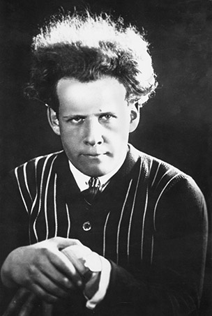

What we see on screen today is the result of years and years of dedication and innovation, trailblazers like Sergei Eisenstein developed techniques decades ago that we see today which revolutionized film. He was the first to create the use of montage in a moving film. That is one of the reasons the site is called...
FOREFATHERS OF FILM
Debut of Montage
A Brief Biography of Sergei Eisenstein
Sergei Eisenstein was a pioneering Soviet Russian film director and film theorist, often considered to be the Father of Montage. He is noted in particular for his silent films Strike (1924), Battleship Potemkin (1925) and October (1927), as well as the historical epics Alexander Nevsky (1938) and Ivan the Terrible (1944, 1958).

Pictured is a Young Sergei Eisenstein
Colliding shots
Eisenstein was a pioneer in the use of montage, a specific use of film editing. He and his contemporary, Lev Kuleshov, two of the earliest film theorists, argued that montage was the essence of the cinema. His articles and books — particularly Film Form and The Film Sense — explain the significance of montage in detail.His writings and films have continued to have a major impact on subsequent filmmakers. Eisenstein believed that editing could be used for more than just expounding a scene or moment, through a "linkage" of related images. Eisenstein felt the "collision" of shots could be used to manipulate the emotions of the audience and create film metaphors. He believed that an idea should be derived from the juxtaposition of two independent shots, bringing an element of collage into film. He developed what he called "methods of montage"